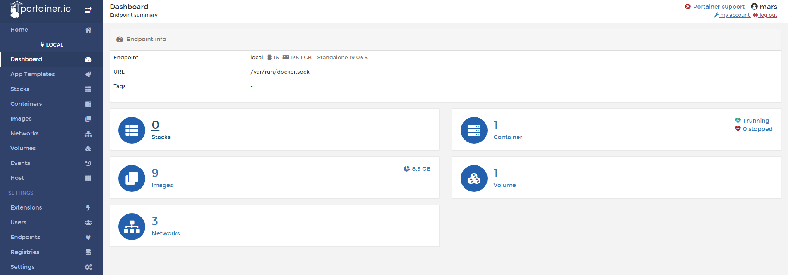
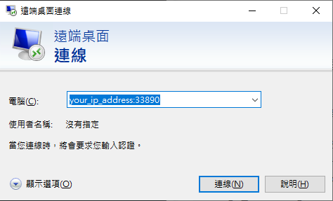
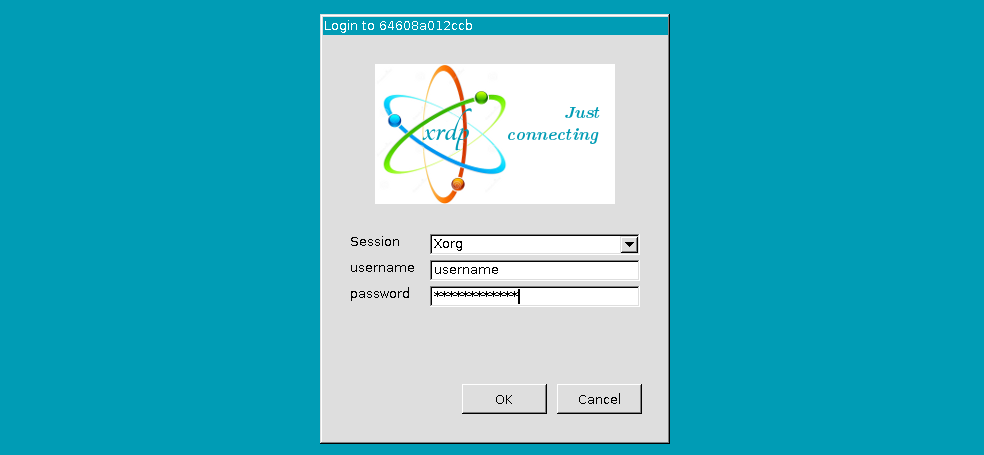
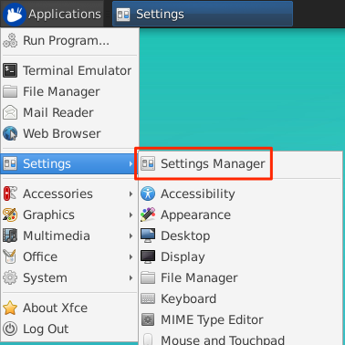
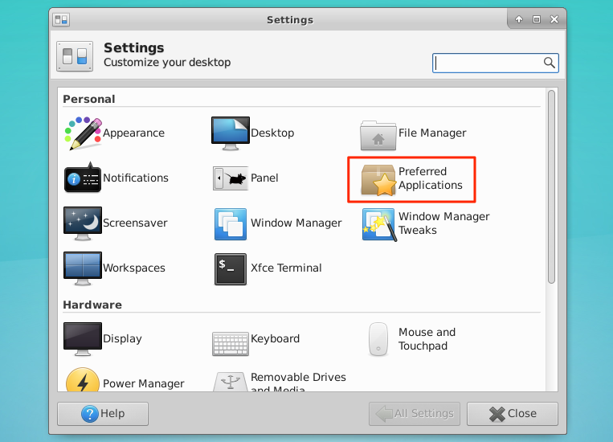
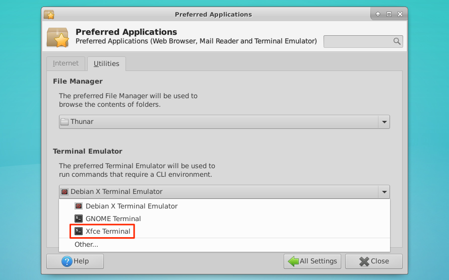

前言 網路上關於Docker的資訊已經有很多了，這邊就不多作介紹了，只針對幾個常用和在我的實作上有用到的指令和套件去做介紹。
用一張圖來簡單的說明Docker的架構：
Portainer Portainer是一個用來管理Docker的工具，他可以透過網頁來查看或管理目前執行的container等等，也可以很快速地進入一個正在執行的container，簡而言之就是一種用來管理Docker的圖形化介面。
安裝 可以用docker search portainer來查看目前有哪些可以用的資源：
1 2 3 4 5 6 sudo docker search portainer NAME DESCRIPTION STARS OFFICIAL AUTOMATED portainer/portainer Making Docker management easy. https://porta… 1439 portainer/agent An agent used to manage all the resources in … 50 portainer/templates App Templates for Portainer http://portainer… 18
下載：
1 docker pull portainer/portainer
依據官方的文件啟動container，當然你可以自訂你想要的port (第一個是host port，第二個是container port)：
1 2 3 4 5 6 7 docker volume create portainer_data docker run -d -p 9000:9000 \ --name portainer \ --restart always \ -v /var/run/docker.sock:/var/run/docker.sock \ -v portainer_data:/data \ portainer/portainer
打開瀏覽器就能看到：

這樣就可以管理docker的image、container跟volume，還可以看到其他的資源。
常用Docker指令 記錄一些常用的Docker指令，以備不時之需，不過我想protainer應該可以取代大部分功能：
1 2 3 4 5 6 7 8 9 10 11 12 13 14 15 16 17 18 19 20 21 22 docker images docker rmi [OPTIONS] IMAGE [IMAGE...] docker ps docker ps -a docker stop [OPTIONS] CONTAINER [CONTAINER...] docker rm [OPTIONS] CONTAINER [CONTAINER...] docker inspect [OPTIONS] NAME|ID [NAME|ID...] docker logs [OPTIONS] CONTAINER docker stats [OPTIONS] [CONTAINER...] docker pause CONTAINER [CONTAINER...] docker unpause CONTAINER [CONTAINER...]
docker stop : process 級別。
docker pause: container 級別。
實作Deep Learning環境 我這裡選擇的image是ubuntu18.04，然後透過ARG來新增使用者：
1 2 3 4 5 FROM ubuntu:18.04 MAINTAINER jim jimhsu11@gmail.comARG USERNAMEARG USERPWD
DEBIAN_FRONTEND noninteractive 接下來這個步驟很重要：
1 2 ENV DEBIAN_FRONTEND noninteractive
因為ubuntu在安裝的時候，某些套件會需要輸入指令，這邊將它設定成沒有交互介面 的模式來安裝。
Add User 接著就是新增使用者，這邊新增使用者主要是為了之後的xrdp套件，在run docker的時候可以不用再去建立使用者，不過在build的時候要記得加上ARG參數:
1 2 3 4 5 6 RUN apt-get update \ && apt-get install -y vim sudo wget \ && useradd -ms /bin/bash ${USERNAME} \ && sudo adduser ${USERNAME} sudo\ && echo ${USERNAME} :${USERPWD} | chpasswd
xrdp 這邊安裝xrdp套件，讓Windows系統可以透過遠端桌面連線連線到Container：
1 2 3 4 5 6 RUN apt-get update \ && apt-get install -y xfce4 xfce4-goodies xorg dbus-x11 x11-xserver-utils xrdp \ && echo xfce4-session > /home/${USERNAME} /.xsession \ && sed -i "s/^exec.*Xsession$/startxfce4/g" "/etc/xrdp/startwm.sh" \ && service xrdp restart
這邊跟一般安裝xrdp的過程一樣，其中sed是將/etc/xrdp/startwm.sh最後一行替換成startxfce4。
Anaconda 這邊使用Anaconda 來管理python的套件，雖然已經使用Docker來隔離系統了，不過還是習慣用Anaconda來建立python環境：
1 2 3 4 5 6 RUN wget --quiet https://repo.continuum.io/archive/Anaconda3-5.0.1-Linux-x86_64.sh -O ~/anaconda.sh \ && /bin/bash ~/anaconda.sh -b -p /opt/conda \ && rm ~/anaconda.sh \ && echo "export PATH=/opt/conda/bin:$PATH " >> /home/${USERNAME} /.bashrc \ && sudo chown -R ${USERNAME} :${USERNAME} /opt/conda
這邊wget後面的網址可以自己去更改，找符合自己需求的版本 來安裝。
然後安裝Anaconda的時候會需要輸入一些指令，所以用-b使用預設值安裝。
-p後面接的是安裝位置，這邊也可以自己去調整。
cuda & cudnn 我這邊cuda使用的版本是10.0，雖然在系統上是安裝的版本是10.1，不過經過測試，是不影響使用的。
我是使用Nvidia/cuda的Dockerfile指令來安裝cuda和cudnn，分別將nvidia/cuda:10.0-base-ubuntu18.04 、nvidia/cuda:10.0-runtime-ubuntu18.04 和nvidia/cuda:10.0-cudnn7-runtime-ubuntu18.04 上需要的Dockerfile指令，加到自己的Dockerfile：
1 2 3 4 5 6 7 8 9 10 11 12 13 14 15 16 17 18 19 20 21 22 23 24 25 26 27 28 29 30 31 32 33 34 35 36 37 38 39 40 41 42 43 RUN apt-get update \ && apt-get install -y --no-install-recommends gnupg2 curl ca-certificates \ && curl -fsSL https://developer.download.nvidia.com/compute/cuda/repos/ubuntu1804/x86_64/7fa2af80.pub | apt-key add - \ && echo "deb https://developer.download.nvidia.com/compute/cuda/repos/ubuntu1804/x86_64 /" > /etc/apt/sources.list.d/cuda.list \ && echo "deb https://developer.download.nvidia.com/compute/machine-learning/repos/ubuntu1804/x86_64 /" > /etc/apt/sources.list.d/nvidia-ml.list \ && apt-get purge --autoremove -y curl \ && rm -rf /var/lib/apt/lists/* ENV CUDA_VERSION 10.0 .130 ENV CUDA_PKG_VERSION 10 -0 =$CUDA_VERSION-1 RUN apt-get update \ && apt-get install -y --no-install-recommends \ cuda-cudart-$CUDA_PKG_VERSION \ cuda-compat-10-0 \ && ln -s cuda-10.0 /usr/local /cuda \ && rm -rf /var/lib/apt/lists/* ENV PATH /usr/local/nvidia/bin:/usr/local/cuda/bin:${PATH}ENV LD_LIBRARY_PATH /usr/local/nvidia/lib:/usr/local/nvidia/lib64ENV NCCL_VERSION 2.4 .2 RUN apt-get update \ && apt-get install -y --no-install-recommends \ cuda-libraries-$CUDA_PKG_VERSION \ cuda-nvtx-$CUDA_PKG_VERSION \ libnccl2=$NCCL_VERSION -1+cuda10.0 \ && apt-mark hold libnccl2 \ && rm -rf /var/lib/apt/lists/* ENV CUDNN_VERSION 7.6 .0.64 LABEL com.nvidia.cudnn.version="${CUDNN_VERSION} " RUN apt-get update \ && apt-get install -y --no-install-recommends \ libcudnn7=$CUDNN_VERSION -1+cuda10.0 \ && apt-mark hold libcudnn7 \ && rm -rf /var/lib/apt/lists/*
這邊有試過用nvidia本身的image來建立，不過失敗了，後來將nvidia上Dockerfile複製自己需要的部分卻成功了，原因沒有深究，如果有人知道的話，歡迎留言告訴我。
以上就是我的Dockerfile所有的內容。
Build & Run & Upload 上面可以看到我的功能是一層一層添加的，實際上實作完一層，我就會build和run一次那個Dockerfile，以確保我的Dockerfile沒有寫錯，所以接下來就是將剛剛寫完的Dockerfile建立起來。
Build Dockerfile 進入Dockerfile所在的資料夾，執行以下指令：
1 2 3 sudo docker build -t image_name:tag \ --build-arg USERNAME=username \ --build-arg USERPWD=yourpassword .
-t後面接的是image的名字跟tag，USERNAME跟USERPWD就是登入系統時要輸入的帳密，這樣image就建立好了。
Run Image 執行下列命令就可以進入到創立的container了：
1 2 3 4 5 6 sudo docker run --gpus device=1 -it \ -p 33890:3389 \ -v /mnt/SSD:/data/SSD \ -v /mnt/HDD:/data/HDD \ -v /docker_config/config:/config \ image_name:tag
--gpus:可以指令你要用的gpu，當然是要你電腦上有安裝複數的gpu才能指令，不然可以直接用--gpus all來使用全部的gpu。
-p:因為有使用xrdp套件，而這個套件使用的port是3389，所以要將container的port映射到主機上的port，這邊選擇加上一個0。
-v:可以將主機上的資料夾位置映射到container上面，也可以是docker的volume映射到container上。這邊要注意的是冒號，冒號前是主機上的位置；後面是container上的位置。
-it：建立好後會直接進入container。
接下來要啟動xrdp套件才可以連線進去，執行：
啟動遠端桌面連線 程式，輸入你主機的ip：

再輸入前面設定的帳號密碼：

進入到你的環境後，要記得進入Setting Manager：

打開Preferred Applications：

選擇Utilities，將預設的Terminal Emulator改成Xfce Terminal：

這樣就可以用Terminal了。
Docker Hub 實作完自己的Dockerfile之後，用Docker Hub 備份或是分享到網上。
第一步要當然是註冊一個帳號，再利用docker login來登入：
1 2 3 4 5 docker login Login with your Docker ID to push and pull images from Docker Hub. If you don't have a Docker ID, head over to https://hub.docker.com to create one. Username: username Password: yourpassword
登入完，直接用docker push來上傳就行了:
1 docker push yourusername/image_name:tag
連結 Docker Hub：https://hub.docker.com/repository/docker/augustushsu/ubuntu18.04-xrdp
Github：https://github.com/AugustusHsu/Docker-DL